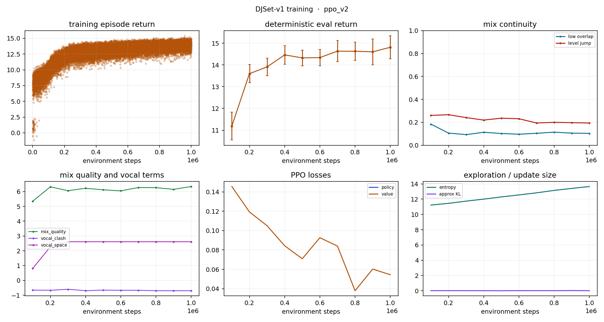

| metric | value |
|---|---|
| timestep | 1000000.0000 |
| mean_return | 14.8105 |
| std_return | 0.5265 |
| final_fader | 1.0000 |
| low_overlap | 0.1038 |
| level_jump | 0.1940 |
| component_eq_craft | 0.4278 |
| component_bass_swap | 0.0000 |
| component_filter_craft | 0.3325 |
| component_phrase | 0.5100 |
| component_busy_hands | -0.0326 |
| component_jitter | 0.0000 |
| component_route | 0.0000 |
| component_continuity | 0.3567 |
| component_mud | -0.1207 |
| component_vocal_clash | -0.6993 |
| component_vocal_space | 2.6100 |
| component_fader_shape | 3.0853 |
| component_cut_shape | 0.0000 |
| component_mix_quality | 6.3408 |
| component_end_transition | 2.0000 |
| train/policy_loss | nan |
| train/value_loss | 0.0544 |
| train/entropy_loss | 13.6524 |
| train/approx_kl | 0.0135 |
| train/explained_variance | 0.9258 |
{
"run": "ppo_v2",
"data_dir": "crate",
"max_steps": 32,
"eval_freq": 100000,
"eval_episodes": 5,
"episodes_logged": 31264,
"elapsed_seconds": 937.3
}